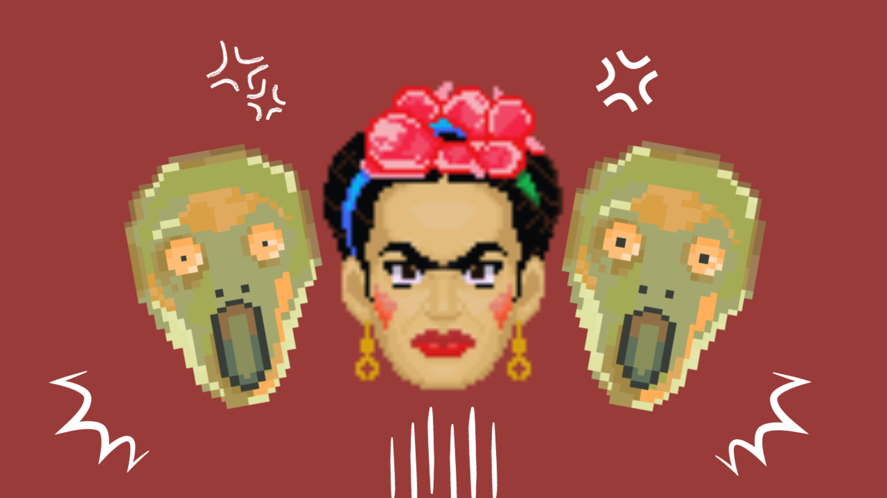

“Gustav” foi inspirado em diversos pintores famosos, começando pelo próprio nome do personagem (Gustav Portinari) homenagem a Gustav Klint e Candido Portinari. Mas quais artistas
que inspiraram as três fases do jogo? Veja a seguir.
Fase 1 – Van Gogh
Para a primeira fase do jogo, foi inspirado em Van Gogh, mas especificamente na obra “Noite estrelada” uma das pinturas mais famosas e atemporais. O vilão dessa fase, é a própria lua do quadro.
Fase 2 – Frida Kahlo
Para a segunda fase do jogo, homenageei Frida Kahlo, o cenário da fase não é inspirado em um quadro, e sim em uma fotografia de Frida. As vilãs do jogo foram baseadas em autorretratos de
Kahlo, e podem remeter também ao quadro “The Two Fridas” de 1939.
Fase 3 - Edvard Munch
A última fase foi inspirada em “O grito”, quadro mais famoso de Edvard Munch. Os vilões Da fase se tratam da criatura assustada presente na pintura.